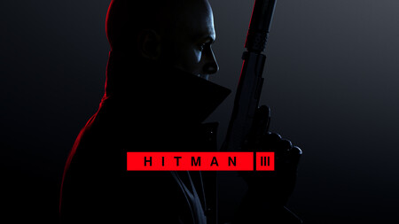
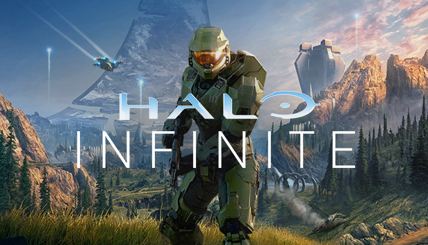

Hitman 3
El Agente 47 regresa como un despiadado profesional en HITMAN 3 para los contratos más importantes de toda su carrera. Embárcate en un viaje íntimo de oscuridad y esperanza en la dramática conclusión de la trilogía de World of Assassination. La muerte espera.
Experimente una aventura trotamundos y visite lugares exóticos que están meticulosamente detallados y llenos de oportunidades creativas. La galardonada tecnología Glacier de IOI impulsa el mundo del juego táctil e inmersivo de HITMAN 3 para ofrecer opciones de reproducción y rejugabilidad incomparables.
Far cry 6
Far Cry 6 nos llevará hasta la isla tropical de Yara, inspirada en Cuba. Allí tiene lugar una revolución militar a cargo del presidente Antón Castillo. Y junto a él le acompaña su hijo Diego. Antón tiene control total sobre la ciudad, para la que fue escogido por votación popular para que retomase sus años de gloria. Y es que en la actualidad, Yara parece una ciudad congelada en el tiempo, como si estuviese en los años 60.
En este sentido, hay un cambio importante para la saga, puesto que es la primera vez que nos moveremos por un mapa urbano de grandes dimensiones, por mucho que haya zonas propiamente tropicales por los alrededores. Además, que Yara sea tan grande propicia una verticalidad inaudita para un Far Cry en cuanto a explorar los interiores de los edificios a lo largo de múltiples plantas. Y habrá que ver si mejora la escalada, aunque no parece que vaya a haber un parkour a lo Dying Light para exteriores, pese a que las últimas entregas mejorasen los agarres en bordes.

Halo Infinite
Una triple responsabilidad que llega de la mano de otra no menos importante, Halo Infinite será la primera vez que los jugones de PCs vivan el lanzamiento de un nuevo FPS protagonizado por el mismísimo Jefe Maestro. Un acontecimiento especialmente celebrado por una comunidad muy exigente con los shooters. Sobre todo, con aquellos que le dan un énfasis especial a su multijugador. Y 343 Industries es totalmente consciente de ello.
A fin de cuentas, Halo Infinite es la sexta entrega principal de una saga consagrada -merecidamente- como máximo referente entre los shooters en primera persona. Desde su debut en la Xbox original hasta nuestros días.
Noticias
E3 2021
El E3 2021 está de vuelta. La pandemia de la COVID-19 impidió que el pasado año tuviésemos una edición; ni física ni digital. Este año tendremos lo segundo. Por suerte para los espectadores, prácticamente nada cambiará: en ciertos momentos tendremos conferencias de las compañías más destacadas del sector del videojuego con multitud de sorpresas, novedades y gameplays. Os contamos todo acerca de este E3 2021, de qué compañías han confirmado asistencia.
- Xbox
- Nintendo
- Capcom
- Konami
- Ubisoft
- Take-Two Interactive
- Warner Bros. Games
- Koch Media
- Square Media
- SEGA
- Bandai Namco
- xSeed Games/Maervelous USA
- Gearbox
- Freedom Games
- NetEase Games
- Verizon
- Binge.com
- Mythical
- Turtle Beach
- Devious Eye Entertainment
- Otter Box Gaming
México tiene el mayor porcentaje de jugadores en el rango más bajo de CS:GO
Subir de rango en el modo Ranked de cualquier videojuego nunca es sencillo, pues miles de jugadores compiten todos los días con ese objetivo en la mente. Por supuesto, Counter-Strike: Global Offensive no es la excepción, por lo que es inevitable que algunas regiones queden relegadas a los puestos más bajos de la tabla de clasificación.
Cabe hacer mención que, para la realización de este estudio, se compararon los datos de más de 7 millones de jugadores del matchmaking de Counter-Strike: Global Offensive.
Desgraciadamente para nuestra región, 17.81% de los jugadores de Silver 1, el rango más bajo de Counter-Strike: Global Offensive, pertenecen a México. En seguida, Colombia posee 13.09% de usuarios en dicho rango y Estados Unidos completa el podio con 8.80%. Por el contrario, 4.32% de los jugadores de Global Elite (GE), el rango más alto del shooter competitivo de Valve, son finlandeses. Por su parte, 2.73% de los usuarios de dicha clasificación son de Suecia, mientras que Estonia está en el tercer lugar con 2.60%.
El nuevo auto de Tesla puede correr Cyberpunk 2077 al mismo nivel que un PS5
En enero de 2021, te platicamos que la división de automóviles de Tesla presentó el Model S Plaid, un vehículo de gran potencia capaz de ejecutar videojuegos de nueva generación. En aquel momento, esa promesa parecía una locura pero, gracias a una reciente demostración, ya sabemos que es posible. Lo que pasa es que Elon Musk, director general de Tesla, realizó una demostración del Model S Plaid donde explicó con lujo de detalle las bondades de este nuevo e interesante automóvil. Entre las cuestiones que se explicaron encontramos la potencia del servicio Tesla Arcade, el cual garantiza acceso a algunos videojuegos.
el nuevo Tesla Model S Plaid cuenta con un procesador Ryzen de AMD y una GPU AMD RDNA 2, lo que se traduce a casi 10 teraflops de potencia para videojuegos. ¿Esto qué quiere decir? El vehículo puede correr juegos de nueva generación sin problemas. En forma de comparación, un Xbox Series X, la consola más potente del mercado, tiene 12.1 teraflops de potencia, mientras que el PS5 tiene 10.3. De esta manera, vemos que el rendimiento del Tesla Model S Plaid es equiparable a las plataformas de Sony y Microsoft. Para ejemplificar la potencia del automóvil, Elon Musk hizo una demostración donde vimos en acción a Cyberpunk 2077, el controversial título de CD Projekt RED. “Este es el rendimiento real de PlayStation 5... Sí, puede ejecutar Cyberpunk. Funcionará a 60 fps con juegos de última generación”, comentó el director general de Tesla.